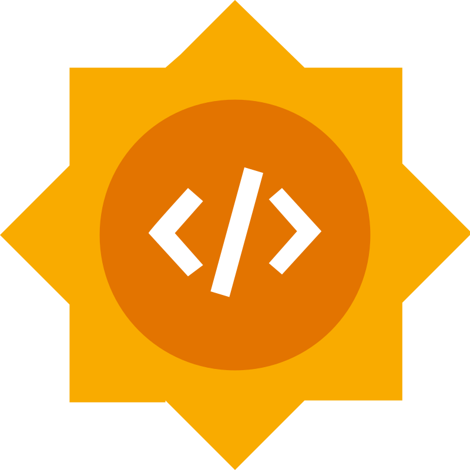
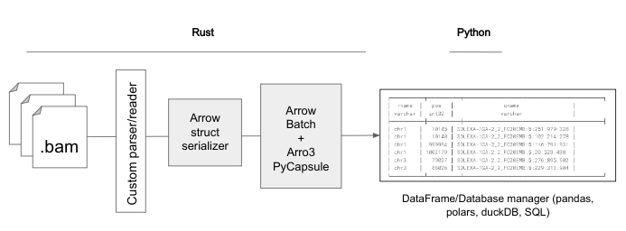

Contributor: Alejandro Gonzales-Irribarren
Mentor: Nezar Abdennur
Open2C is an organization of computational biologists working on open-source software for analyzing 3D genomic data. Their key tools - bioframe, pairtools, and cooltools - are focused on the analysis of data obtained using Hi-C and related technologies. Furthermore, their goals are centered on easy usage, flexibility, and versatility to facilitate active development of novel analytical approaches, and scalability to make use of the latest and largest datasets.
One thing most of Open2C’s tools have in common is the usage of metadata assembly, such as chromosome sizes, centromere locations, and other specific information. Right now, that functionality is tied to bioframe’s internal representation of genomic metadata, including a discrete set of representative species. Furthermore, there is no Python API or package that works over assembly metadata to quickly retrieve this kind of information. Developing and isolating a Python API that retrieves assembly metadata and implements a bridge between different bioinformatic nomenclatures (e.g., NCBI, UCSC) will be very powerful not only with the goal to implement it within these tools but also for the open usage of all users working in Python.
On the other hand, basic algorithmic operations and serialization on 3D genomic data are well covered with Open2C tools; however, the need to keep improving efficiency in terms of memory usage and computation times is still an incomplete goal. This objective is hard to achieve only using Python and usually requires bindings to low-level languages. On top of this, user usage should be easy enough to allow direct interaction with the data without complex implementations, currently achieved by using data frames and performing operations on them such as filtering, sorting, deduplication, among others. Lastly, these calculations or any other algorithm on 3D data must be secure and safe.
A key focus of the initial proposal considered expanding the bioframe API to access genome assembly metadata from additional providers like Ensembl and NCBI, enabling more comprehensive data integration. This goal was later changed to create an isolated and unique assembly metadata API to allow not only Open2C integration but free and open-source usage within the Python environment. Furthermore, the project ought to explore Rust-based bindings as a potential replacement to dataframe operations using Polars, later opened to database managers such as DuckDB, with the goal of improving memory efficiency and runtime performance for dataframe operations.
The first part of the project was focused on creating a Python metadata assembly API to provide comprehensive genomic metadata from different sources. The process began with an extensive exploration of data providers, including NCBI, Ensembl, and UCSC. After thorough investigation, NCBI emerged as the most suitable and comprehensive source, offering extensive genome and assembly reports through its FTP directories.
Here, we identified the pivotal accession to base our database: Genbank and RefSeq. Utilizing both, a scraping algorithm to retrieve data, parse it, and organize everything in a parquet file was developed. We found that RefSeq did not have all GenBank assemblies, leading to errors when testing our scraping strategy. Two solutions were proposed: using original RefSeqs or grabbing RefSeq equivalents during GenBank scraping. Because of this, our database is based on unique GenBank accessions. These accessions point to metadata files like {species}_assembly-report.txt and {species}_assembly_stats.txt, which allows us to cross-platform nomenclatures, making it directly usable in different naming formats. All the information was stored in a parquet file using pyarrow structures for efficient data conversion and manipulation.
Our algorithm was first tested on human assemblies, which yielded 1,062 assemblies. After filtering for chromosome-level assemblies and known references (hg38, T2T, and hg37), the database was reduced to three genomes with two main paths to scrape data from: hg38 and T2T. This main test confirmed that the scraping algorithm can be easily used and automated to update the data periodically. Nonetheless, some differences, such as the number of patches and their structures, required manual intervention.
API development formed the core of the project's functionality. I implemented the GenomeInfo interface, which was later renamed to AssemblyInfo, equipped with a variety of methods for data retrieval and manipulation. The development process included the creation of submodules and test modules to ensure code organization and thorough testing. As the project evolved, additional methods were developed as well as additional species. At the end of this project, our database was populated with metadata for key reference species, including human, mouse, dog, cow, fruitfly, and worm, among others. It also incorporated both assembly-level and chromosome-level metadata, such as GC percentage, ungapped length, and chromosome length, providing a new useful tool to retrieve genomic information.
There is significant potential for performance gains through zero-copy transitions between programming languages, particularly when working with dataframes and various data schemas such as Arrow, Polars, and Pandas. This approach could lead to substantial improvements in fetching and performing high-level operations on diverse genomic data formats, including 3D genomics.
To explore this potential, I worked on implementing zero-copy base data transitions between Rust and Python to enhance bioframe operations. The initial focus was on BAM file operations using the oxbow project as a starting point following this schema:

First, for any given file format, a custom parser/reader is used, assuming that efficiency and additional constraints have been covered. Then, for each record, an Arrow structure is built. This simple process is chunked to reduce memory footprint. A record of batches then is converted to a Python record of batches through a PyCapsule, a specific data structure inside arro3. This lazy, nested iterator object can be accessed from the Python side, allowing seamless interaction with the data. During this process, we need to be very detailed with the Arrow schema used. I validated this approach with both toy examples and a full implementation using oxbow’s BAM module. The results demonstrate that zero-copy batched transitions can significantly enhance the manipulation and performance of various bioinformatic formats, laying the groundwork for future optimizations.
The project successfully developed a comprehensive Python metadata assembly API, efficiently integrating genomic data from multiple sources, and implemented a zero-copy data transfer mechanism between Rust and Python to enhance bioframe operations. These advancements lay a strong foundation for future optimizations by reducing simple tasks, such as retrieving assembly or chromosome metadata, and closing a gap between fast and memory-efficient operations and retrievals from data managers commonly used.
In the future, I plan to expand the AssemblyInfo API to incorporate additional data sources and species, further enriching the database and increasing its utility. Additionally, integrating the zero-copy data transfer mechanism with other bioinformatic tools and formats, such as VCF and BCF files, could lead to significant performance gains and enable more efficient analysis of large-scale genomic data.
Acknowledgement: I want to thank my mentor, Nezar Abdennur, who guided me through the whole project, especially but not limited to design, implementation, code review, and community bonding. I would also like to thank Vedat Yilmaz and the whole Open2C team for their help, ideas, and useful feedback during the project.